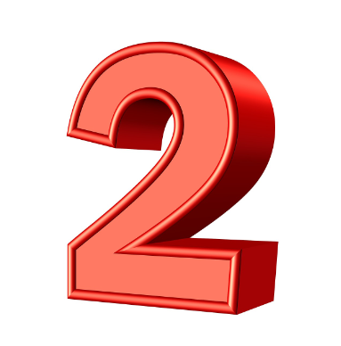
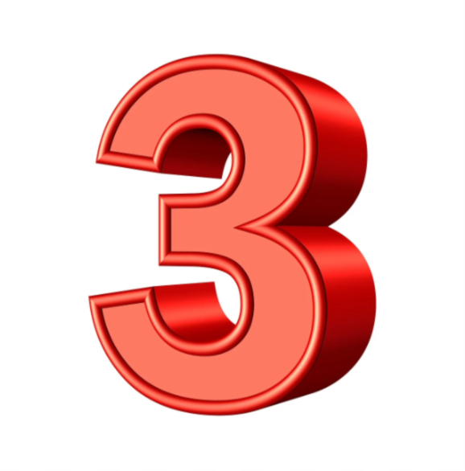
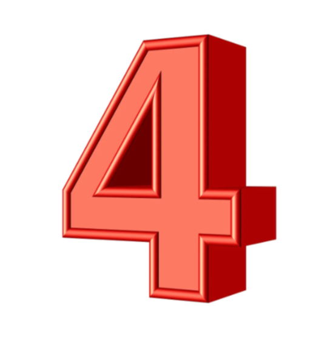

Project Objectives:
-
HTML Foundation
- Build the structural foundation of the website, focusing on semantic HTML to create a clean and accessible layout.
-
Styling with CSS
- Enhance the visual appeal with responsive designs, typography, and imagery, ensuring a polished and modern look.
-
Use of Imagery
- Incorporate strategic imagery to improve user engagement and complement the website’s content.
-
Interactivity with JavaScript
- Utilize an API to create a dynamic animal search feature, showcasing how users can fetch and display real-time data interactively.
Phase-1
Phase-2
Phase-3
Phase-4